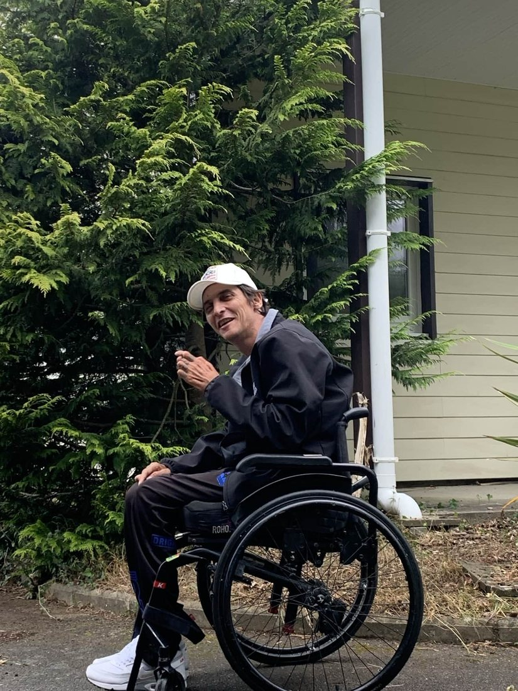

L'Architecte : une renaissance, une cause, une mission
Ce récit n'est qu'un résumé. J'ai vécu plusieurs vies, et je ne compte pas en faire un livre ici — mes aventures passées serviront plutôt de matière première pour enrichir l'univers et les récits de LunaGalaxie. L'essentiel est ailleurs : après un parcours hors norme, j'ai enfin trouvé mon but, mon projet, ma cause. C'est désormais ma mission, jusqu'au bout.

1. Les racines : l'école de la forêt et de l'inclusion
Né en France, j'ai quitté l'Hexagone à 4 ans. Ma mère, étudiante à la Sorbonne en Mai 68, avait choisi de tourner le dos au confort du 16e arrondissement de Paris pour emmener ses enfants vivre dans les Caraïbes, puis en Guyane, où elle est devenue professeure des écoles spécialisée pour les enfants en difficulté. C'est à ses côtés, dès mes 15 ans, que j'ai appris la valeur de l'inclusion et de la transmission.
La Guyane a forgé mon caractère : père d'un premier fils à la veille de mes 19 ans avec une femme amérindienne, j'ai vécu du fleuve et de la forêt — d'abord la pêche, puis l'orpaillage aux côtés des Brésiliens, avant de passer au détecteur de métaux (MineLab) pour travailler proprement sans polluer les rivières, tout en validant une formation de niveau BTS dans le tourisme et les métiers de terrain.
2. Le 31 octobre : la seconde naissance
Une même année m'a pris mon père au printemps et offert mon deuxième fils à l'automne, né de mon union avec une femme Matawai. L'année suivante, un 31 octobre — le soir d'Halloween — un accident me laisse tétraplégique complet.
Je considère ce jour comme une nouvelle naissance. Mon cadet n'avait alors que 8 mois : hors de question de passer trois ans enfermé en centre de rééducation loin de lui. Après seulement 8 mois, je suis sorti contre l'avis médical pour le retrouver et me battre par moi-même.
La vie a continué de me tester — j'ai perdu ma mère peu de temps après — mais j'ai avancé : pour mes 18 ans de handicap, j'avais regagné assez d'autonomie pour partir seul de la Guyane jusqu'à Madagascar, une terre qui m'a profondément marqué. Sept ans après l'accident, alors que mon fils approchait de ses 7 ans, j'ai pris la décision difficile de me séparer de sa mère : elle avait toujours été un soutien précieux, mais elle me couvait trop — je devais vivre seul pour conquérir ma pleine autonomie.
3. L'étincelle de 2014 et le virage IA (2024 – 2026)
Un an après ce nouveau départ, je vois le coup d'envoi de la Coupe du monde au Brésil donné par un patient paraplégique grâce à l'exosquelette du Dr Miguel Nicolelis. L'idée de R'ExoIA naît ce jour-là. Pendant des années, elle mûrit tandis que je forme des jeunes à l'agriculture sur mon terrain en Guyane.
Puis l'intelligence artificielle arrive. Je surfe sur la vague, je m'informe et je relance mon projet. Fin 2024, avec l'aide de mon fils aîné et un coup de pouce de la providence, nous réunissons les fonds pour monter ma machine de calcul ; je quitte la Guyane, passe chez mon fils commander les pièces, et m'envole vers Madagascar — avec une escale de deux jours en Éthiopie — où je reste six mois sur place avec mon équipe locale.
Fin 2025, de retour en Guyane après un mois en France, moi qui n'avais jamais vraiment ouvert un terminal Linux, je m'y plonge sérieusement pour bâtir l'architecture logicielle du projet. Fin 2026 — mes 20 ans de renaissance au Brésil — je pars en expédition R&D vers mon destin, sur les terres mêmes où l'étincelle est née, pour concrétiser les prototypes, fonder officiellement notre ONG et déployer nos Îlots Intégrés au service des enfants handicapés et des femmes.